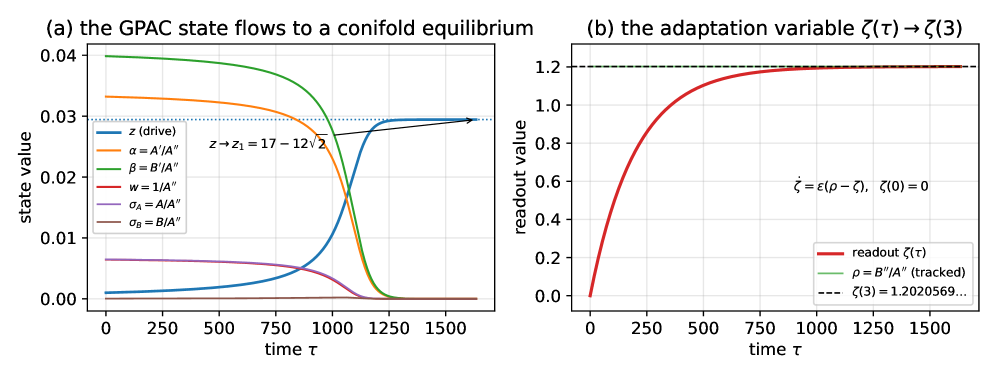

Formalizes in Lean 4 the mathematics of computing reals with chemical reaction networks, including CRN-computability, Kurtz's theorem, and two Turing-completeness results.
Abstract
We present Ripple, an open, AI-formalized Lean 4 framework for the mathematics of computing real numbers with chemical reaction networks (CRNs). Ripple formalizes the full ladder of models – the GPAC / CRN continuum and the CRN-computable reals, the large-population-protocol (LPP) compilation pipeline, and a continuous-time Markov chain (CTMC) layer bridged to the deterministic mean-field limit by three machine-checked versions of Kurtz's theorem, and two Turing-completeness results – the Bournez-Graça-Pouly GPAC Turing-completeness construction and the Soloveichik-Cook-Winfree-Bruck stochastic-CRN universality theorem. The development is reliable (its core constructions are verified to depend on exactly the three Mathlib foundational axioms, with no sorry); it exposed genuine, fixable gaps in published proofs (the approximate-majority convergence argument and the LPP main theorem); and it proves new results – a fully machine-checked construction of Apéry's constant ζ(3) as a CRN-computable number via its holonomic generating function, the same recipe turning the modular 1/π series of Ramanujan into a sharp open problem. The formalization was carried out predominantly by AI agents using only publicly available models, so the workflow is reproducible.
Problem
The mathematics of computing real numbers with chemical reaction networks (CRNs) spans many models and papers, with informal proofs that may leave gaps unaddressed. A machine-checked, unified foundation for this theory was lacking.
Approach
Ripple is an open Lean 4 framework formalizing the full ladder of CRN computation models: the GPAC/PIVP continuum, CRN-computable reals, the large-population-protocol compilation pipeline, and a continuous-time Markov chain layer bridged to the mean-field limit via three versions of Kurtz's theorem. It also formalizes two Turing-completeness results (Bournez-Graça-Pouly GPAC and Soloveichik-Cook-Winfree-Bruck stochastic CRN) and population-protocol majority algorithms. The development spans 920 files and 768k lines and was carried out predominantly by AI agents using publicly available models.
Results
Core constructions depend on exactly the three standard Mathlib axioms with no sorry. Formalization exposed genuine gaps in published proofs (the approximate-majority drift inequality with an explicit n=4 counterexample, and the LPP main theorem) and produced a machine-checked construction of Apéry's constant ζ(3) as a CRN-computable number.

Figure 2: The \zeta(3) GPAC as an ODE system — the bounded eight-variable polynomial PIVP of § 7.4 , integrated (DOP853) from rational data at z_{0}=10^{-3} . (a) the projective state flows to a conifold equilibrium: the drive z relaxes to z_{1}=17-12\sqrt{2} while the bounded coordinates \alpha=A^{\prime}/A^{\prime\prime} , \beta=B^{\prime}/A^{\prime\prime} , w=1/A^{\prime\prime} , \sigma_{A}=A/A
Pillar
files/lines/defs
Formalizes
Core/
15 / 7.2k / 152
GPAC/PIVP, CRN pipeline
Kurtz/
9 / 3.6k / 78
Kurtz's mean-field theorem (3 versions)
sCRNUniv./
92 / 45k / 3.4k
stochastic CRN Turing completeness
BoundedUniv./
214 / 161k / 3.6k
GPAC Turing completeness
PopulationProtocol/
435 / 303k / 8.3k
majority protocols (drift gap fixed)
Selected pillars of the Ripple framework (files / lines / defs)